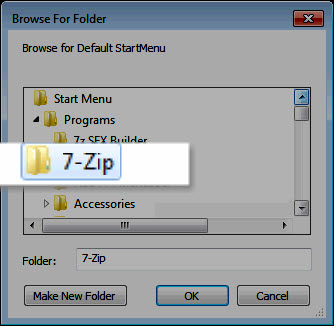

Creating a ssApp 


1. Preparation.
- Create a temporary "build" folder. Such as apzdev in the root of the drive c:\apzdev
- under this directory create a working folder of the app name.
- In this example create a folder 7-Zip C:\apzdev\7zip
- under this folder create 7-Zip_v9.20Basic so the folder structure will be C:\apzdev\7zip\7-Zip_v9.20Basic
- inside this folder add the file 7z920.exe, which is the 32bit file version of 7zip.
- Install the app, this will also create the shortcuts needed.
- Right-click the C:\apzdev\7zip\7-Zip_v9.20Basic folder and Sendto "SetupS Editor" this will open up the ssEditor.
- Ensure 'ssApp' is the "Build Type".
- Enter in the Title of the application in the Example "7-ZipBasic"
- Enter in the version of the application in the Example "v9.20"
- Enter in the URL of where the application can be located to enable users to find updates in the Example www.7-zip.org
- Enter in a description of the application, this information can be found at the URL or the help file of the application.
- Select the categories for the application, and click the "add" button for each one.
2. Assembly tab
- Check that the "Install-to Path" is correct.
- Under Assembly details Click browse button and select the installer.

- This will then search for the silent install switch, after this click on the button and the process will be added to the assembly list in the Example "7z920.exe" /S
- At this point save the file either by pressing (Ctrl+S) or clicking the save button on the toolbar.
3. Shortcuts tab
- Click the "Default Menu" browse button and navigate to the Startmenu folder created by the app you just installed.

In the Example select 7-Zip and then click ok
- From here select the shortcuts locations/options. Don't forget about the "shortcut names keep" box -- this will be used if the 'KeepAll' Option is not enabled.
- Pick at least one "Menu Catalog" item for any advanced startmenu -- even if you don't use them others might.
4. Graphics tab
- Folder Icon: Select from the main menu "Tools - Extract Icons (F10)" and find a file with the icon you'd like to represent the app. You'll get a window opened for the possible ones that has been extracted. Delete any extra files. Click Save button, for the preview to appear. Notice it creates a copy to the "ssApp.ico" -- delete the other file(s) so that they will not be added in the final deployment package.
- ScreenShot: Select from the main menu "Tools - Screenshot - Grab Clipboard Picture (F12)". Open your app and when you have a nice picture you want press PrintScreen/Alt+PrintScreen. Return to ssEditor and click "Yes". Notice it automatically creates the necessary "ssApp.jpg".
- Fader: You're basically on your own for this one. All you need to do is find (or convert to) a nice picture in .png format and copy that file to the "Build" folder. After copying the .png to the "Build" folder, simply click "Save" for it to appear in the Preview. Notice it creates a copy to the "ssApp.png" -- you'll need to delete the other file if you don't want that in your final deployment package.
Hint: Places to look are the website, or sometimes from the "Install-to Path".
5. Post-processing tab
- Examiine this to see if anything needs to be added. With ssApps it is likely that this tab will not be needed as the Installer carries out this process.
6. Build
- IMPORTANT NOTE: This step is only available if building archive deployment packages (.apz/.pgz). Otherwise, the "Build" folder is complete for the ssWPI (folder) deployment package and no further action is required.
- Check your Build options. Click Menu "Builds" and select options for how the builds will be done.
- Finally, when ready, click "Tools, Build (F5)" -- or click the "Build" button on the Mini-Toolbar.

7. Uninstall
- Now uninstall the app. Hint: Use CCleaner for this because after uninstalling simply use its built-in Registry cleaner.
8. Test
- To test, simply double click on the .app or .apz file created by ssEditor.
Copyright © 2020, Vergitek Solutions
ssTek Forum: Tools for custom Operating Systems!